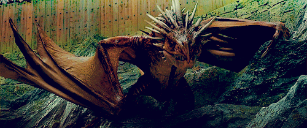

Le Tournoi des Trois Sorciers est un concours de magie où s'affrontent les trois principales écoles de sorcellerie européennes : Poudlard, Durmstrang et Beauxbâtons.
Le vainqueur se voit décerner la Coupe du Tournoi des Trois Sorciers.
Le premier Tournoi s'est tenu approximativement il y a sept cents ans (aux alentours de 1294), chaque école étant représentée par un champion. Les champions sélectionnés s'affrontent au cours de trois tâches ayant pour but de tester leurs capacités magiques, leur audace, leur pouvoir de déduction et leur aptitude à réagir face au danger. Les champions s'affrontent pour l'honneur et la gloire de gagner le Tournoi.
Cependant, le Tournoi est extrêmement dangereux et certains champions sont décédés durant la compétition. Certains juges également ont été blessés. En 1792, les trois directeurs des écoles participantes au Tournoi ont été blessés par un Cocatris que les champions devaient attraper et qui a réussi à s'échapper. Alors qu'il avait lieu traditionnellement tous les cinq ans, le Tournoi a finalement été annulé. En 1994, le Tournoi revit, après une préparation minutieuse afin d'éviter tout nouveau décès. Malheureusement, il se termine une fois de plus en tragédie, avec le décès du champion de Poudlard, Cedric Diggory.
Traditionnellement, le Tournoi des Trois Sorciers est organisé par l'une des trois écoles de magie, chacune leur tour, tous les cinq ans. En 1994, il s'est déroulé à Poudlard. En raison du Tournoi, la coupe de Quidditch des Quatre Maisons est annulée.
Une préparation minutieuse a eu lieu et les règles des tâches ont été établies par le Département de la coopération magique internationale et le Département des jeux et sports magiques du Ministère de la Magie en collaboration avec leurs homologues des autres pays. Le plus grand secret entoure l'évènement et les élèves n'ont découvert l'évènement qui les attendait que le jour de la rentrée.
La Coupe de Feu

La Coupe de Feu est un juge impartial chargé de déterminer les champions de chaque école. Pour déposer sa candidature, il suffit de déposer dans la Coupe un parchemin avec son nom et le nom de son école. Chaque champion est alors tenu par un contrat magique et ne peut plus se dérober aux épreuves.
La grande coupe de bois grossièrement taillé n'a rien de remarquable, à part qu'il en jaillit une gerbe de flammes bleues. Lorsqu'elle n'est pas utilisée, elle est conservée dans un reliquaire, un grand coffre de bois incrusté de pierres précieuses. Pour soumettre sa candidature, il suffit d'écrire son nom et celui de son école sur un parchemin et de le laisser tomber dans la Coupe de Feu. Le parchemin devient écarlate un bref instant et projette une gerbe d'étincelles. La Coupe de Feu choisit les trois élèves qu'elle juge les plus dignes de représenter leur école. Ses flammes deviennent d'un bleu étincelant puis rougeoient et un morceau de parchemin noirci volète dans les airs avec le nom du candidat sélectionné. Une fois qu'un champion a été sélectionné par la Coupe de Feu, il est tenu par un contrat magique et a l'obligation de se soumettre aux épreuves du tournoi jusqu'à son terme.
Le Tournoi des Trois Sorciers n'avait pas eu lieu depuis fort longtemps. Une nouvelle règle a paru essentielle aux organisateurs : interdire aux élèves mineurs de concourir. Pour cela, une Limite d'Âge a été tracée par Albus Dumbledore autour de la Coupe de Feu. Au lieu de sélectionner trois champions, elle finit par en choisir quatre. Barty Croupton Jr. a utilisé un sortilège de Confusion très puissant pour la tromper.
La première épreuve
La première tâche du Tournoi des Trois Sorciers a lieu le 24 novembre 1994 et consiste à s'emparer d'un œuf d'or, couvé par un dragon parmi ses vrais œufs. Pour cela, le champion doit détourner l'attention du dragon puis s'emparer de cet œuf.

La première tâche est un secret qui ne doit être dévoilé aux champions que le jour venu. Quatre dragons sont cachés dans la Forêt interdite. Ils proviennent de l'élevage de Roumanie où travaille Charlie Weasley.
- Boutefeu chinois
- Magyar à pointes
- Suédois à museau court
- Vert gallois
Il s'agit en fait de femelles, généralement plus dangereuses que les mâles, d'autant plus qu'elles doivent couver des œufs. Le plus dangereux de tous est le Magyar.
Rubeus Hagrid demande à Harry Potter de le rejoindre sous sa cape d'invisibilité le soir. Harry est très surpris quand il se rend compte qu'il assiste à un rendez-vous galant entre Hagrid et Olympe Maxime puis aperçoit les dragons qui rugissent et crachent des flammes. Une potion de Sommeil a été utilisée pour les transporter. Les sorciers espéraient que les dragons seraient dociles à leur réveil dans le calme et le noir, mais en fait ils se sont montrés furieux et ont dû être stupéfixés : leur peau très épaisse est imprégnée d'une protection magique et plusieurs sorciers par dragon sont nécessaires pour cette opération.
En repartant pour la salle commune de Gryffondor, Harry croise Igor Karkaroff à la recherche d'indices sur le contenu de la tâche. Ainsi, Harry est persuadé que les Champions de Beauxbâtons et de Durmstrang seront prévenus. Ne reste que le champion de Poudlard, Cedric Diggory. Harry choisit de lui dévoiler ce qui les attend.
La seconde épreuve.
La deuxième tâche du Tournoi des Trois Sorciers a lieu le 24 février 1995 et consiste à nager sous l'eau pendant une heure pour récupérer un "trésor". Pour cela, le champion doit résoudre l'énigme de l'œuf reçu lors de la première tâche puis trouver un moyen de respirer sous l'eau.
L'énigme
L'œuf d'or attrapé contient une énigme que le champion doit élucider. Ludo Verpey montre aux champions à la fin de la première tâche que l'œuf a une charnière et qu'il peut s'ouvrir.
Harry Potter est tout d'abord soulagé car il a trois mois pour découvrir de quoi il retourne. Il ouvre l'œuf lors de la fête en son honneur dans la salle commune de Gryffondor à la demande de ses amis. Harry glisse un ongle dans la rainure et ouvre l'œuf. Un horrible bruit s'élève dans la salle et Harry pense que la seule chose comparable qu'il ait jamais entendue, c'est l'orchestre qui a joué le jour de l'anniversaire de mort de Nick Quasi-Sans-Tête. Seamus Finnigan compare ce cri à celui du spectre de la mort et Neville Londubat pense que c'est le son de quelqu'un qu'on torture avec le sortilège Doloris. George Weasley le détrompe en lui disant que c'est illégal et que pour lui cela ressemble plus à la voix de son frère Percy en train de chanter. Harry laisse de côté l'œuf. Hermione Granger lui en fait le reproche plusieurs fois.
À l'issue du bal de Noël, Cedric Diggory, pour le remercier de l'avoir prévenu pour les dragons, lui conseille de prendre un bain et lui donne le mot de passe de la salle de bains des préfets. Harry, très jaloux de Cedric quant à sa relation avec Cho Chang n'est pas disposé au départ à écouter ce conseil qu'il trouve idiot et tente d'ouvrir l'œuf plusieurs fois dans le dortoir. Ludo Verpey lui propose de l'aider mais par loyauté envers les autres champions, Harry refuse. Harry se met ensuite à éluder à chaque fois qu'un ami, comme Hermione ou Rubeus Hagrid, lui demande s'il sait en quoi consiste la deuxième tâche. Malgré ses réticences, il finit par aller à la salle de bains des préfets comme le lui a conseillé Cedric. Il s'y rend sous sa cape d'invisibilité avec la carte du Maraudeur. Il se fait couler un bain dans cette pièce très luxueuse et ouvre l'œuf. La plainte assourdissante retentit aussitôt. Mimi Geignarde lui dit alors de l'ouvrir sous l'eau, que c'est ce qu'a fait Cedric. Harry, tout d'abord scandalisé par la présence du fantôme qu'il n'avait pas aperçu auparavant, place l'œuf sous l'eau et l'ouvre. Il entend alors une chanson et plonge la tête sous l'eau pour mieux l'écouter.
« Descends nous visiter et entends nos paroles
Nous devons pour chanter être au-dessous du sol.
À présent, réfléchis, exerce ton esprit,
Ce qui t'est le plus cher, nous te l'avons ravi,
Pendant une heure entière il te faudra chercher
Si tu veux trouver ce qu'on t'a arraché.
Après l'heure écoulée, renonce à tout espoir
Tes efforts seront vains car il sera trop tard »
Il lui faut écouter trois fois la chanson pour la connaître par cœur. Il réfléchit ensuite au sens et comprend rapidement que les voix doivent appartenir à des créatures aquatiques et que la deuxième tâche va avoir lieu dans le lac de Poudlard. Soudain, son regard se pose sur le tableau de la salle de bains qui représente une sirène et il comprend que c'est cela la clé : il va devoir aller dans le lac peuplé d'êtres de l'eau. Mimi le félicite car Cedric a mis plus longtemps à comprendre. Harry est surexcité tout d'abord car il a trouvé la solution... quand il réalise qu'il reste de gros soucis : il est piètre nageur et comment respirer sous l'eau pendant une heure ? Il ne sait pas non plus ce qui va lui être ravi.
La troisième et dernière épreuve.
La troisième tâche du Tournoi des Trois Sorciers a lieu le 24 juin 1995 et consiste à s'emparer du Trophée des Trois Sorciers caché dans un labyrinthe, rempli de créatures dangereuses et de mauvais sorts à conjurer.
Le terrain de Quidditch est méconnaissable. Une haie de six mètres de hauteur l'entoure et une unique ouverture donne accès à un vaste labyrinthe. Le chemin qui s'y enfonce parait sombre et effrayant.
Le faux Alastor Maugrey, Minerva McGonagall et Filius Flitwick arborent de grandes étoiles rouges et lumineuses sur leurs chapeaux. Rubeus Hagrid les porte sur le dos de son gilet en peau de taupe. Les quatre professeurs vont patrouiller autour du labyrinthe. Les champions, s'ils sont en difficulté, doivent envoyer des étincelles rouges en l'air pour appeler un patrouilleur. Cela signifie leur abandon.
Harry Potter et Cedric Diggory entrent en premier. Au bout d'une cinquantaine de mètres, ils se séparent. Harry utilise l'enchantement des Quatre-Points pour se repérer et se diriger vers le centre du labyrinthe, au nord-ouest.
Cedric affronte les spécimens restants des Scroutts à pétard. Ils sont énormes et quand il retombe sur Harry, il a l'air sérieusement secoué et de la fumée s'échappe de sa manche. Harry s'éloigne de cet emplacement pour mettre de la distance entre lui et les créatures.
Au détour d'un virage, Harry tombe nez à nez avec un Détraqueur. Il lance son Patronus, la créature recule d'un pas en se prenant les pieds dans l'ourlet de sa robe, ce qui étonne Harry. Harry réalise alors que c'est un Épouvantard et lance un Riddikulus.
Harry malgré l'enchantement des Quatre-Points est perdu. Soudain il voit une brume dorée qui flotte à quelques mètres devant lui. Il essayait de lui lancer un sortilège de Réduction mais il est inefficace : en effet ce sortilège n'agit que sur les solides. Il se demande s'il doit prendre le risque de la traverser quand il entend le hurlement de Fleur Delacour. Cela le décide à traverser et se trouve pris au piège : c'est comme s'il se retrouvait au plafond. Il ne voit pas de sortilège qu'il peut lancer dans cette situation, ferme les yeux et oblige ses pieds à bouger. Il continue sa route en essayant d'apercevoir Fleur. Il est partagé et ne sait pas s'il vaut mieux que Fleur abandonne et se met à rêver à la victoire. Durant dix minutes, il ne rencontre pas d'autre obstacle que des culs-de-sac.
Cette fois-ci, c'est Harry qui se retrouve face à un Scroutt à pétard et effectivement il le trouve énorme. Long de trois mètres, il ressemble à un scorpion géant avec son long dard et son épaisse carapace. Harry lui lance un sortilège de Stupéfixion qui rebondit sur la carapace et frôle le crâne de Harry. Harry lui lance alors un maléfice d'Entrave, qui rebondit encore une fois. Le monstre avance, il n'est qu'à quelques centimètres quand Harry arrive à l'arrêter en lui lançant le sortilège sur le ventre, dépourvu de carapace.
Harry entend la voix de Cedric s'écriant "Qu'est-ce que tu fais ? Qu'est-ce qui te prend ? Tu es fou ?" et il comprend ce qu'il se passe quand la voix de Viktor en réponse dit "Endolorrris !". Il lance un sortilège de Réduction pour que la haie brûle suffisamment et se ménager un passage pour se rendre au secours de Cedric. Harry lance un sortilège de Stupéfixion à Viktor, dans le dos. Harry et Cedric décident de lancer des étincelles rouges pour ne pas laisser seul Viktor, même s'ils ne comprennent pas son attitude. Il risquerait sinon de se faire dévorer. Harry et Cedric se séparent à nouveau.
Harry se trouve maintenant face à une créature qu'il n'a vue jusqu'à présent que dans Le Monstrueux Livre des Monstres, un sphinx. Il bloque le passage en marchant d'un bord à l'autre du chemin. Le sphinx lui dit qu'il est près du but, que le plus simple serait de passer devant lui. Harry lui demande poliment de le laisser passer, mais le sphinx refuse : cette créature a trop le goût des énigmes. Il lui indique donc que : "Si tu donnes la bonne réponse, je te laisserai passer, si ta réponse est mauvaise, je t'attaquerai férocement. Enfin, si tu ne dis rien, tu pourras repartir sans dommage dans la direction opposée." N'ayant rien à perdre, Harry demande à écouter l'énigme.
« D'abord, pense au premier de ce qu'il faut apprendre
Lorsque l'on ne sait rien à l'âge le plus tendre.
Ensuite, dis-moi donc ce que fait par naissance
Celui qui, au palais, a élu résidence.
Enfin, pour découvrir la dernière donnée
Il suffit de la prendre à la fin de l'année.
Tu connaîtras ainsi la créature immonde
Que tu n'embrasserais pour rien au monde »
Harry demande au sphinx de bien vouloir répéter et réfléchit à voix haute et finit par trouver la solution "A-règne-ée", c'est une araignée que Harry va devoir affronter.
Harry voit devant lui le Trophée des Trois Sorciers qui scintille dans l'obscurité. Cedric est là et, étant plus grand que lui et ayant de plus longues jambes, il ne pense pas pouvoir le rattraper. Une chose immense arrive sur la gauche de Cedric et Harry hurle pour le mettre en garde. Il s'agit d'une araignée géante. Harry essaie de lancer des sortilèges de Stupéfixion et d'Entrave, mais ils n'ont aucun effet. L'araignée soulève Harry par la jambe et une de ses pinces touche Harry et le blesse. Harry lance un sortilège de Désarmement qui se révèle efficace et l'araignée le lâche.
Harry et Cedric se disputent pour savoir qui doit prendre le Trophée. Cedric veut laisser la place à Harry, mais celui-ci veut gagner à la loyale et sa jambe blessée l'empêche de courir. Harry finit par proposer de prendre le Trophée ensemble. Ils le touchent effectivement simultanément et sont donc les deux vainqueurs du Tournoi des Trois Sorciers, mais le Trophée était piégé, il a été transformé en Portoloin pour emmener Harry à Voldemort, à Little Hangleton.